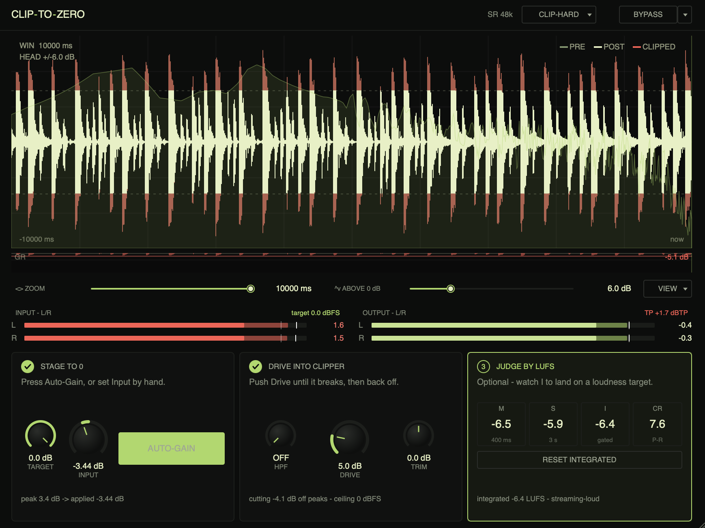

Stage your input. Drive into the clipper. Judge by the numbers. Each step is a numbered lane in the UI — the plugin tells you what to do next, instead of leaving you to figure out where to put the gain.

Press Auto-Gain. The plugin captures 2 seconds of audio, finds the loudest peak, and writes the input gain that brings it to your target. No more eyeballing the input meter while a transient slips past.
Or set Input by hand. The target is your call —
0.0 dBFS for full clipping, −1.5 if you
want a little safety, anything you like.
Push Drive until you hear the signal break in a way you can't
unhear, then back off. Output is hard-bolted to
0 dBFS regardless of how hard you push — louder
doesn't mean blown speakers.
Four curves: Hard (clean, transparent),
Soft (rounded knee, less harsh), Poly (polynomial,
controllable harmonic content), Tube (asymmetric, even
harmonics). 2× / 4× / 8× oversampling. Optional pre-clip HPF,
20–500 Hz, so you can spare the sub from getting
smashed.
ITU-R BS.1770-4 LUFS metering — momentary, short-term, integrated. 4×-oversampled true-peak (rare in clippers at this price), crest factor, gain-matched A/B bypass so "louder = better" doesn't bias your ear.
When integrated converges, you know exactly where you landed.
−8.2 LUFS is streaming-loud. −14 is
broadcast-safe. The plugin doesn't tell you which to aim for —
that's your job.
Pre/post overlay. Red highlight where the clipper actually shaved samples. Separate gain-reduction history strip.
Horizontal 1 ms – 5 s, skewed toward the precise end. Vertical headroom 0 – 24 dB. See exactly how far above the rails the input is going.
Single-core, lock-free. 8× oversampling holds at ~2% of one core on M1. No allocations on the audio thread.
JUCE 7. Universal binary, notarised. Tested in Live 12, Logic Pro, Reaper, Cubase, Bitwig, Pro Tools.
Output mutes for 300 ms once every 60 s. No other limits, no time-out, no nag screens.
One-time purchase. Three machines per license. No online activation, no phone-home, no subscription.
All v0.x updates free. v1.0 will be a free upgrade for existing license-holders.
Built by one person. Bug reports go to a real inbox, not a ticketing system. Issues fixed in days, not quarters.
$29 buys ClipToZero for macOS. VST3, AU, and Standalone in the same installer. Use it on every project you'll ever make.
Try the demo first if you want — the only difference is a 300 ms output mute every minute, so you can hear how it sounds on your material before deciding.